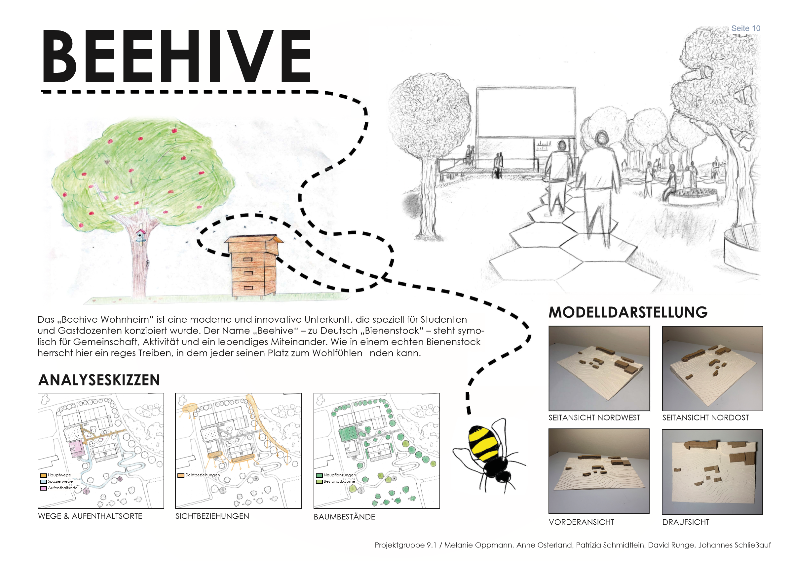
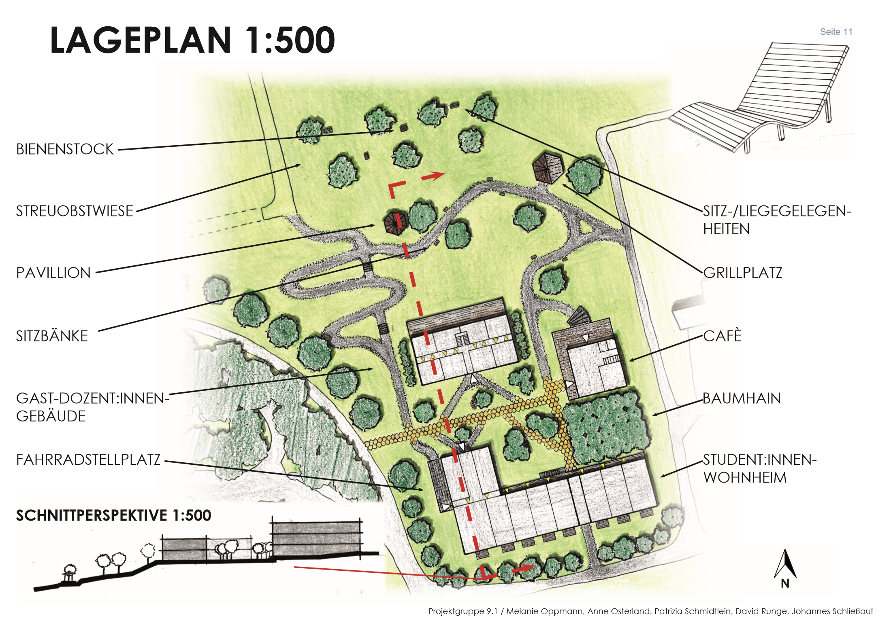

Orientierendes Projekt
HSWT Freising // WS 2023/24 (Projektgruppe 9.1)
Das Ziel des Orientierenden Projekts war es, den Studierenden eine Übersicht über die Aufgabenfelder der Landschaftsplanung, der Stadtplanung, der Freiraumplanung und des Landschaftsbaus zu vermitteln. Es versetzte uns in die Situation zu analysieren, zu planen und zu entwerfen. Dementsprechend hatten wir in dem Projekt vier unterschiedliche Teile bzw. Aufgaben: von der landschaftlichen Bestandsaufnahme über das Entwurfskonzept für das Wohnheim „Beehive“ bis zum Modellbau.
Typologie
Orientierendes Entwerfen
Semester
1. Semester // HSWT Freising
Bewertung
Note 2,3 (Gruppe)
Gruppe
Projektgruppe 9.1
Beehive // Modell

Lageplan // Gezeichnet
